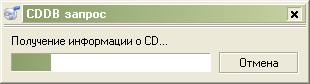
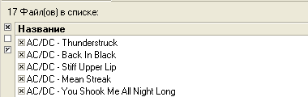
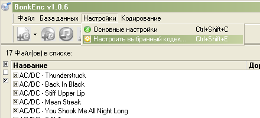
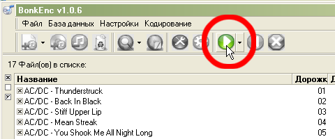

Скачайте последнюю версию fre:ac с SourceForge или с сайта fre:ac. Установите программу и запустите ее. Теперь вставьте аудио CD в ваш CD/DVD привод. Обычно дорожки CD появляются автоматически в главном окне fre:ac. Если этого не произошло нахмите кнопку "Добавить содержимое аудио CD" чтобы добавить дорожки в список задач.

Поскольку мы не хотим вручную вводить названия для CD, мы можем просто послать запрос в freedb онлайн базу данных CD, чтобы названия были заполнены для нас. Чтобы сделать это мы просто выбираем пункт "Запрос в базу CDDB" в меню "База данных". Мы должны увидеть окно, выглядящее как это:
Программа автоматически заполнит информацию о дорожках:
После того, как это сделано, мы должны настроить программу. Выберите пункт "Основные настройки" в меню "Настройки". После этого должен появиться следующий диалог:

На первой вкладке мы можем изменить настройки кодека. fre:ac по умолчанию использует кодек LAME MP3. В этом уроке мы будем использовать его. Убедитесь, что включена опция "Кодирование на лету". Также установите папку, в которую Вы хотите сохранять ваши MP3.
В поле "Формирование названия фала" вы можете выбрать формат имен получаемых файлов. Я предпочитаю чтобы имена папок состояли из имен артистов и названий альбомов, а имена файлов - из номера дорожки и названия. Соответствующий формат "<artist> - <album>\<track> - <title>". В этом случае имена файлов будут выглядеть примерно так:

Для более опытных пользователей есть много других настроек, которые могут быть изменены в соответствии с их требованиями и пожеланиями.
Теперь мы настроим кодек LAME для того, чтобы получить приличный MP3. Выберите пункт "Настроить выбранный кодек" в меню "Настройки".
У вас должно появиться окно, похожее на это.

В fre:ac есть несколько разных предустановок кодека LAME. Все они просто устанавливают разные настройки кодека с разным качеством. Наивысшая настройка (т.е. "Сумасшедший") даст MP3 файлы, которые будут занимать много места на диске, но и звучать будут лучше всего. Я предпочитаю устанавливать настройки вручную. Здесь вы видите эту настройку. А сейчас мы оставим предустановку "Стандартный". Нажмите "Да" и мы сможем выбрать дорожки, которые мы хотим копировать и кодировать.
Теперь мы вернулись в главное окно, где мы сможем выбрать дорожки, которые мы хотим копировать и кодировать. Слева от каждой дорожки есть маленький переключатель. Те, в которых ×, отмечены для копирования и кодирования. Поскольку я хочу копировать весь диск, я оставил включенными все, но вы можете выбрать только те дорожки, которые вам нужны.
Сейчас мы можем нажать большую кнопку Старт, которая запустит процесс кодирования.
Внизу окна начнется отображение процесса выполнения:

По завершении каждой дорожки из списка задач (где отображаются все названия) будут автоматически удалены все завершенные дорожки.
Поздравляю! Вы только что скопировали и закодировали свой первый CD с помощью fre:ac!